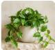

تشخيص جديد
ارفعي الصورة ثم اختاري النبتة وأضيفي ملاحظتك.
اسحبي صورة النبتة هنا أو اختاري ملفاً
صورة قريبة وواضحة للأوراق المتأثرة
حتى ١٠ ميغابايت · إرشاد توضيحي · PNG أو JPG
بونس · سانسيفيريا · زنبق السلام · زاميا
سجل التشخيصات المقترحة

نتيجة مقترحة · غير مؤكدة
البوتس · احتمال زيادة الري
١١ أكتوبر ٢٠٢٦ · راجعي الري وحالة التربة والتصريف قبل اتخاذ أي إجراء.
هذا سجل توضيحي واحد، وليس تحليلاً معملياً أو قياساً لصحة النبتة